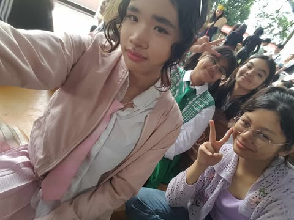

Welcome!
This is the About Page.
Hello! My name is Kiera Anne L. Amor. I am from 9-Fidelity, and our adviser is Dr. Dureza D. Dancal.
I think I know myself pretty well, maybe or maybe not. I have yet to experience life fully,
and Im not mature enough to make big desicions on my own. I know that much since I still rely on people,
I rely on my friends, I rely on my parents, I even rely to social media. It's bad I know, I trust them more than I trust myself.
I don't think of myself as a bad person though. I think Im nice, kind and lovable. Im approached by many people I have a lot of friends.
And I would like to say that Im successful in school, except for a few subjects. My hobbies? I don't have a lot,
but i do like to draw, paint, sketch, sing and sometimes sing. Im the oldest and I have one sibling that is 10 years old.
He's smart, and im sure he will follow on my footsteps on becoming an Lpsci student. I have nice parents they treat me well,
but sometimes they get mad with my scores, maybe they expect to much from me since I was the previous valedictorian in my school.
Im not really that amazing and I don't know how to make them realize that. That is all about me, im just a simple person, nothing more, nothing less.
Im an average kid who's trying to her best in school to make friends and survive.
Listen my favorite song
MV MAPEH WITH BLOOPERS:>>
MAPEH MV BLOOPER
MAPEH MV BLOOPER
MAPEH MV
2nd Quarter
| Description |
Picture |
This is a picture of me and my friends at the parade that english month held,
It was trully an amazing time, me and my friends decided to match costmues we were the chippetes. |
 |
This is when my family and I went to tagaytay and at Cecilia's Restaurant.
It was a fun time we visited a lot of places in tagaytay, and I remember feeling refreshed after a long time. |
 |
This is me taking a picture of the sunset, I remeber being in awe when taking
this, after a bad day at school I see this It made me truly happy. |
 |
This is us making the dinosaur do backflips.
|
VIDEO #1 |